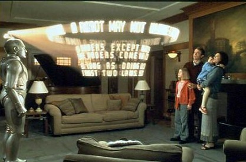
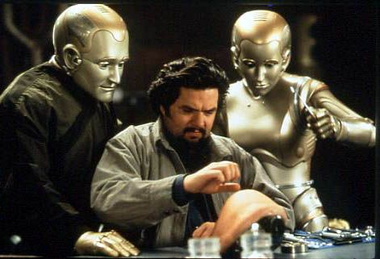
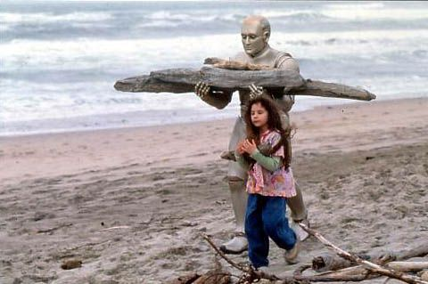

Contexto Organizacional
Un nuevo contexto
Algo que se puede apreciar ademnas, es contexto social y organizativo, ya que el robot estaba programado con determinadas reglas de sus creadores y tenia que cumplirlas si o si, como una especie de Mision de la empresa. Se puede ver como la empresa creadora de los Robots, pone en juego su cultura organizacional y trata de comprar al "Robot diferente" para evitar posibles conflictos con los demas usuarios. Ya que el proposito de la misma, era solo hacer robot que siguieran ordenes sin tener un pensamiento propio, y esto le ocacionaria problemas a la empresa. En la parte mensionada, se puede notar cierta falla en los valores de la empresa, porque no buscan darle una solucion o escuchar al cliente, solamente evitar algun tipo de conflicto, que le imposibilite seguir vendiendo el producto.
Trabajo en Equipo
En esa constante busqueda de "mejorar", se encuentra con otra robot que tambien tenia personalidad propia. La cual habia sido modificada por un inventor, quien seria la persona que ayudaria muchisimo a Andrew en la transformacion. Se puede apreciar como un buen trabajo en equipo, buscando la misma meta y logran crear hasta organos artificiales, que no solo servirian para su cambio sino que tambien serian usados por la humaidad en general.
Actitud y Aptitud
Al ser un robot, podia incorporar Aptitutes nuevas con mayor facilidad, pero lo mas destacable, es la Actitud, el saber lo que queria, para que lo queria y porque. Un ejemplo en la pelicula, aprende muy rapido a trabajar madera, solo porque le habia fallado a la niña que era su dueña al romperle un adorno, entonces aprendio a trabajar la madera y le hizo una figura identica.
Reconociemiento
En la busqueda constante de lograr su transformacion, logra en el final de su vida la aprobacion y el reconocimiento del humano en el cambio, en base a su constancia, a su mision personal, de querer demostrar que pudo lograr el cambio.
Conclusion
Como cierre, podemos ver la importancia que hay en la comunicacion. Lo importante que se ha vuelto la tecnologia a la hora de formar estas nuevas formas de comunicarnos, acortando disctancias y facilitando la conexion entre personas.
La importancia, tanto organizacional, como personal, de tener una mision y una vision clara nuestra, de lo que queremos y a donde queremos llegar, sin necesidad de modificar nuestros valores y siempre luchando por conseguir esa meta.
Sobre cuanto importante es formar un buen equipo para eso, que comparta siempre nuestra misma filosofia y nos permita avanzar a nuestro objetivo, y siempre, pero siempre una buena comunicacion como eje principal.